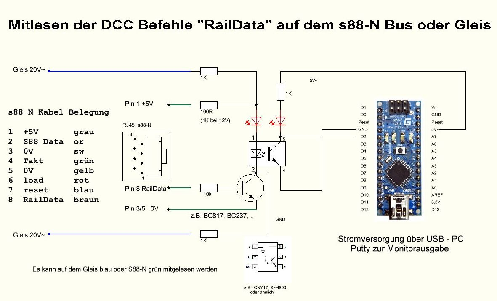

Arduino DCC Sniffer
DCC Sniffer zum Mitlesen der DCC Befehle direkt vom Gleis oder "RailData" auf dem s88-N Bus
für den DCC Sniffer verwende ich einen Arduino Nano,
welcher die DCC-Daten über USB zum Mitlesen bevorzugt mittels PuTTY (oder den Arduino-IDE Monitor) auf dem Windows PC oder Linux Mint zur Anzeige bringt, einfach an das letzte s88-N Modul anstecken oder auf dem Gleis anschließen.
PuTTY Konfiguration: Serial Telnet comx 115200
Verschiedene DCC Sniffer Mitleseprogramme, Sketch's, je für die gleiche Hardware.
- RB_DCC_Sniffer.ino,
- RB_DCC_Sniffer_V2.ino
Quelle:
rudysmodelrailway - Arduino + ATtiny DCC Decoder / DCC Sniffer / S88 Software download (October 2015)
(externer Link)
- DCC_Sniffer.ino,
- DCC_Sniffer2.ino, war eine meiner bevorzugten Varianten.
Quelle:
Philipp Gahtow - DCC Sniffer
(externer Link)
zusätzlich wird die Libary "TimerOne" benötigt, die aktuelle Library funktioniert bei mir nicht,
hier ein ältere Version: Libary_fuer_DCC_Sniffer-TimerOne.zip
mit dieser älteren "TimerOne" Libary funktionieren das Mitlesen auf einen Arduino Nano.
- dcc_monitor_v1.4_stummi.ino.zip, die von mir bevorzugte Variante, mit guter Statistik, verwendet die Bibliothek NmraDCC 2.0.17
Quelle: Stummi Modellbahnforum - für Stummi Forum Benutzer
(externer Link)
die DCC Monitor Version 1.5 funktioniert leider nicht mehr, mit PuTTY als Monitor, nur mit Arduino-IDE


! Nicht gleichzeitig am Gleis und s88-N betreiben, sonst wird (nur) der Transistor zerstört.